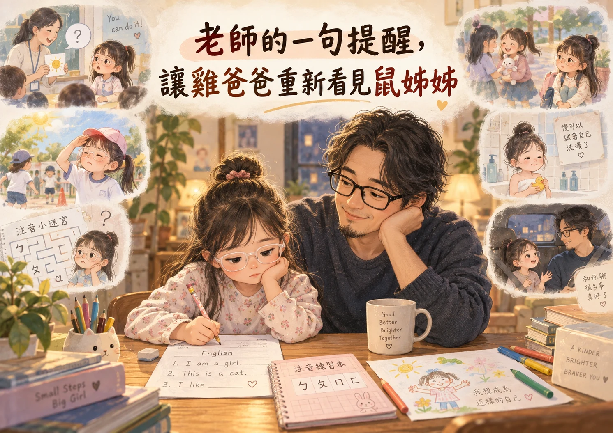

—其實「不專心」是提醒父母回過頭去，看看每天都在身邊的孩子

前一天晚上，鼠姊姊回到家後，自己把長頸鹿美語的英文作業拿了出來，要我們陪她寫。
雞爸爸有點意外，夏令營已經結束兩週，幼兒園平日晚上也沒有作業...
看到她願意坐下來，一題一題完成，不需要提醒，也沒有人催，就是把該做的事完成...
當時只是覺得：鼠姊姊好像又長大了一點。
沒想到隔天，幼兒園老師卻特別提醒我們：「鼠姊姊最近上課好像有點不專心。」
這位老師有二十多年的幼教經驗，也當過園長。
所以雞爸爸聽到後，第一個反應不是覺得老師是不是看錯了，反而開始想：
是不是有什麼事情，我們每天陪在她身邊，卻沒有注意到？
老師看見了訊號，雞爸爸才開始往下多看一點
回家之後，雞爸爸問鼠姊姊：「是老師講的妳聽不懂，還是上課會想睡覺？」
她想了一下，說偶爾真的會想睡。
但比較常發生的是，老師講完之後再問問題，她其實不知道老師到底在問什麼。
她又提到早上大肢體活動的時候外面太陽實在太亮，亮到她只能把眼睛閉起來。
而前一星期，她才因為眼睛嚴重過敏，又揉到角膜磨破。
聽到這裡，雞爸爸好像有把事情串起來。
老師看到的，
也許是一個問題答不出來、沒有一直看著前面，戶外活動時甚至閉著眼睛的小朋友。
但鼠姊姊自己正在經歷的，可能只是：我有在聽，可是我聽不懂。
或者：真的太亮了，我眼睛不舒服。
老師的提醒沒有錯，反而正是因為那一句「最近不太專心」，雞爸爸才開始發現：
原來一個行為的背後，可能還有很多事情沒有被看見...
最近敏感的鼠姊姊，好像真的有一點忙
最近鼠姊姊還有另外一些小事情放在心上，ㄅㄆㄇ原本是夏令營長頸鹿那邊在教的...
但幼兒園課後留園，可能剛好都是大班孩子，老師也拿了ㄅㄆㄇ迷宮遊戲給大家玩。
鼠姊姊卻說：「可是有的ㄅㄆㄇ...我還認不出來」
加上前陣子，原本說是好朋友的同學，後來又說不要跟她好了。
加上再過兩個星期，她就要六歲了，因為之前和她約定，六歲後要開始練習自己洗澡。
這原本只是雞爸爸覺得很自然的一個「長大一點」的安排。
但現在回頭想，雞爸爸也開始有點好奇：
她是不是也感覺到，最近大家好像都在期待她再長大一點？
認出ㄅㄆㄇ、聽懂老師的問題、處理朋友之間的關係、自己洗澡...
這些事情單獨看，好像都很小。
可是全部剛好一起來，對一個快六歲的小朋友來說，可能就不是那麼小了。
這時候，雞爸爸又想到前一天晚上，她一個人坐在那裡寫英文作業的樣子。
原來她不是不在意，可能正好相反...
她其實很在意自己有沒有做好。
一直都在身邊，不代表真的知道她在想什麼
這件事情讓雞爸爸真正有感的，其實不是「鼠姊姊最近不專心」。
而是自己最近，好像真的少了一點和她單獨聊天的時間。
每天早上送她上學，放學再和鼠媽媽、龍弟弟會合。
吃飯、回家、洗澡、睡覺..
一家人看起來都在一起，可是「人在旁邊」，和「知道她最近在想什麼」，還是不太一樣...
所以早上開車時，雞爸爸開始陪她把學校的一天慢慢走一遍...
哪個老師教什麼、什麼時間做什麼、哪個時候跟哪個小朋友玩、課後留園發生了什麼...
理解五歲小孩世界裡的複雜。有課程、有朋友、有聽不懂的問題、有突然改變的關係...
也有一些她覺得很重要，大人如果沒有問，可能永遠不會知道的小事。
雞爸爸想，以後上下學的車程，可以少一點歌，多一點聊天。
當然，也不能每天一坐上車，就開始進行「幼兒園深度專訪」。
不然大概沒幾天，鼠姊姊就會先宣布：「爸爸，今天放歌就好...」
孩子需要被要求，但建立在情感與安全感之後
最近看到一個親子教養的觀點，孩子需要被管教，
但不該變成上與下之間的權力關係...
而是用更多擁抱、牽手、回應，讓孩子感受到愛。
「無論今天我是什麼樣子，都有人願意接住我...」不只是知道...而是感受到...
這陣子的鼠姊姊，身邊突然多了很多「長大一點」的訊號。
快六歲了，有些東西應該要慢慢會了...有些事情要開始自己做了...
朋友之間，也不再只是今天一起玩、明天一起玩那麼單純。
最近她上學前又開始偶爾說肚子痛，也會回來跟爸爸說：「我都沒有朋友。」
雞爸爸不知道這些事情之間是不是一定有關係。
但至少開始提醒自己：也許在要求她再往前走一點以前，可以先讓她鬆一點。
有時候不是急著說：「妳要專心。」「妳要勇敢。」「這個要學會了。」
而是先抱一下，問一句：「最近是不是有點辛苦？」
讓她知道，就算今天有人不跟妳玩、老師的問題答不出來、有些東西還沒有學會，回到家之後，爸爸媽媽還是在。
不是因為妳做得好才愛妳，只是因為妳是妳。
陪她練習ㄅㄆㄇ，也留一張白紙給她
今天晚上，雞爸爸原本和鼠姊姊約好，要一起練ㄅㄆㄇㄈ。
ㄅㄆㄇㄈ還是要學，但雞爸爸想多留一點時間，給很喜歡畫畫的鼠姊姊一張白紙。
問她：「妳想成為什麼樣的鼠姊姊？」
如果用說的太難，那就畫下來。
勇敢的...溫柔的...會照顧別人的...或者完全不是雞爸爸現在想得到的樣子，都可以。
因為那本來就不該由爸爸媽媽先替她畫好。
她現在也許還不知道，要怎麼從今天的自己，走到畫裡那個自己。
但這一段路，爸爸媽媽可以陪她找。
想勇敢，我們陪她試一次。
想溫柔，我們陪她練習看見別人的感受。
想把事情做好，我們就陪她把一件小事慢慢做好。
拉遠一點看，人生當然不只有ㄅ、ㄆ、ㄇ、ㄈ...
所以今天晚上，雞爸爸想在課本旁邊，多放一張白紙。
一邊學著認識ㄅㄆㄇㄈ、一邊也讓她慢慢認識自己。
或許父母能陪孩子做的，就是這樣，
不是替她畫好未來的樣子，而是在她還不知道怎麼下筆的時候，先陪她畫出第一筆...